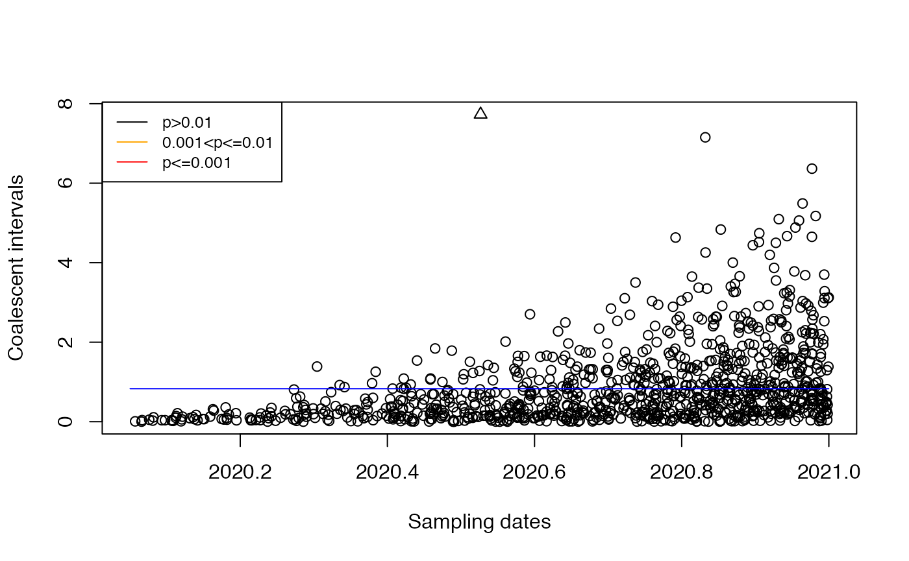

Demonstration of quick test in DetectImports
Xavier Didelot
2023-01-18
Source:vignettes/quick.Rmd
quick.RmdIn this vignette we demonstrate the quick test by simulating with imports and making sure that they are found.
Simulation with a single import
Let’s consider that the local population started in 2020 and a single import occurred in 2020.5. 1000 genomes were sampled between 2020 and 2021.
tree=simImports(localPopStart=2020,importDates=c(2020.5),
samplingStartDate=2020,samplingEndDate=2021,samplingNumber=1000)
plot(tree,show.tip.label = F)
axisPhylo(backward = F)
Let’s detect the imports:
res=detectImportsFAST(tree)
plot(res)We can see that the import was correctly detected.
Let’s see what happens if we mistakenly assume that the population size is constant:
res=detectImportsFAST(tree,constant=T)
plot(res) In this case the correct import is no longer detected.
Simulation with two imports
Let’s consider that the local population started in 2020 and two imports occurred in 2020.33 and 2020.66. 1000 genomes were sampled between 2020 and 2021.
set.seed(0)
tree=simImports(localPopStart=2020,importDates=c(2020.33,2020.66),
samplingStartDate=2020,samplingEndDate=2021,samplingNumber=1000)
plot(tree,show.tip.label = F)
axisPhylo(backward = F)Let’s detect the imports:
res=detectImportsFAST(tree)
plot(res)
We can see that the two imports were correctly detected.